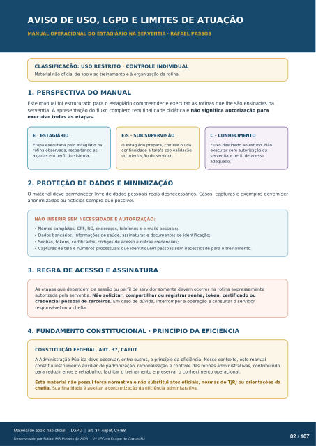

AVISO DE USO, LGPD E LIMITES DE ATUAÇÃO
CLASSIFICAÇÃO: USO RESTRITO · CONTROLE INDIVIDUAL
Material não oficial de apoio ao treinamento e à organização da rotina.
1. PERSPECTIVA DO MANUAL
Este manual foi estruturado para o estagiário compreender e executar as rotinas que lhe são ensinadas na serventia. A apresentação do fluxo completo tem finalidade didática e não significa autorização para executar todas as etapas.
E · ESTAGIÁRIO
Etapa executada pelo estagiário na rotina observada, respeitando as alçadas e o perfil do sistema.
E/S · SOB SUPERVISÃO
O estagiário prepara, confere ou dá continuidade à tarefa sob validação ou orientação do servidor.
C · CONHECIMENTO
Fluxo destinado ao estudo. Não executar sem autorização da serventia e perfil de acesso adequado.
2. PROTEÇÃO DE DADOS E MINIMIZAÇÃO
O material deve permanecer livre de dados pessoais reais desnecessários. Casos, capturas e exemplos devem ser anonimizados ou fictícios sempre que possível.
NÃO INSERIR SEM NECESSIDADE E AUTORIZAÇÃO:
Nomes completos, CPF, RG, endereços, telefones e e-mails pessoais;
Dados bancários, informações de saúde, assinaturas e documentos de identificação;
Senhas, tokens, certificados, códigos de acesso e outras credenciais;
Capturas de tela e números processuais que identifiquem pessoas sem necessidade para o treinamento.
3. REGRA DE ACESSO E ASSINATURA
As etapas que dependem de sessão ou perfil de servidor somente devem ocorrer na rotina expressamente autorizada pela serventia. Não solicitar, compartilhar ou registrar senha, token, certificado ou credencial pessoal de terceiros. Em caso de dúvida, interromper a operação e consultar o servidor
responsável ou a chefia.
4. FUNDAMENTO CONSTITUCIONAL · PRINCÍPIO DA EFICIÊNCIA
CONSTITUIÇÃO FEDERAL, ART. 37, CAPUT
A Administração Pública deve observar, entre outros, o princípio da eficiência. Nesse contexto, este manual constitui instrumento auxiliar de padronização, racionalização e controle das rotinas administrativas, contribuindo para reduzir erros e retrabalho, facilitar o treinamento e preservar o conhecimento operacional.
Este material não possui força normativa e não substitui atos oficiais, normas do TJRJ ou orientações da chefia. Sua finalidade é auxiliar a concretização da eficiência administrativa.
Ver também o infográfico original (página 2)
